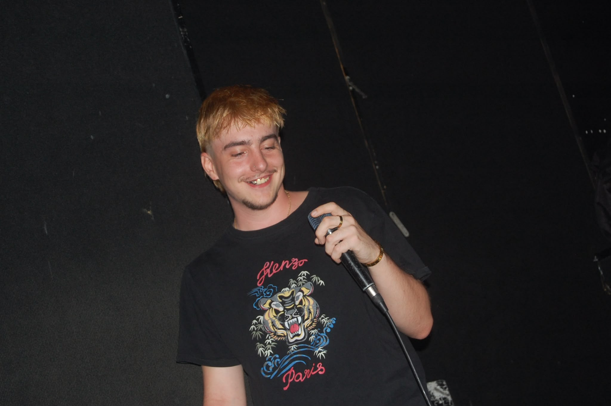

DABOGA®
DaBoga es un artista y productor madrileño con raíces gallegas en activo desde principios de 2023. Temas como el amor, la nostalgia o la moda se han ido transformando a lo largo de proyectos casi autobiográficos en los que el digicore, el rage y el cloudrap se solapan para dar cabida a un espacio sonoro que hoy es su identidad.